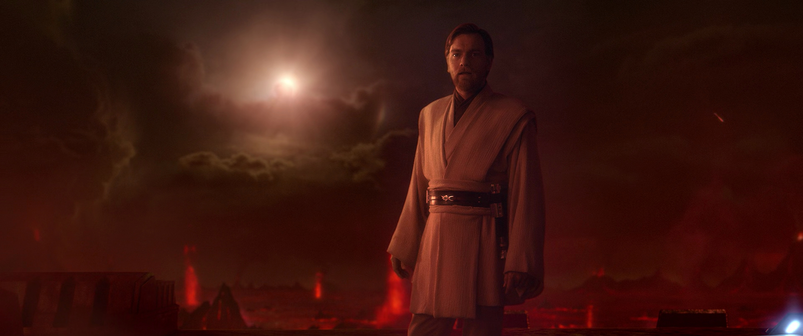

Obi-Wan su Mustafar prima del Gran Duello
Obi-Wan Kenobi, che per comodità chiameremo semplicemente "Kenobi" è uno dei jedi più iconici famosi di tutta la galassia e le sue gesta sono note a tutti i fan di Star Wars. Ci sono però aspetti che la maggior parte dei fan ingnora: quanto è stato esemplare Kenobi come Jedi? I fan che hanno unicamente visto i film della saga principale probabilmente ignorano questo fatto perché Kenobi non viene approfondito accuratamente nei film in cui appare, ma chi ha visto la serie omonima a lui dedicata e la serie animata "The Clone Wars" certamente sa quanto questo personaggio è stato determinante ai fini dello sviluppo della trama di Star Wars ed ha largamente contribuito a salvare la galassia. Nelle pagine successive osserveremo le sue gesta e rifletteremo su come queste lo posizionano nell'olimpo di Star Wars.
Obi-Wan in The Clone Wars